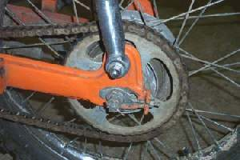
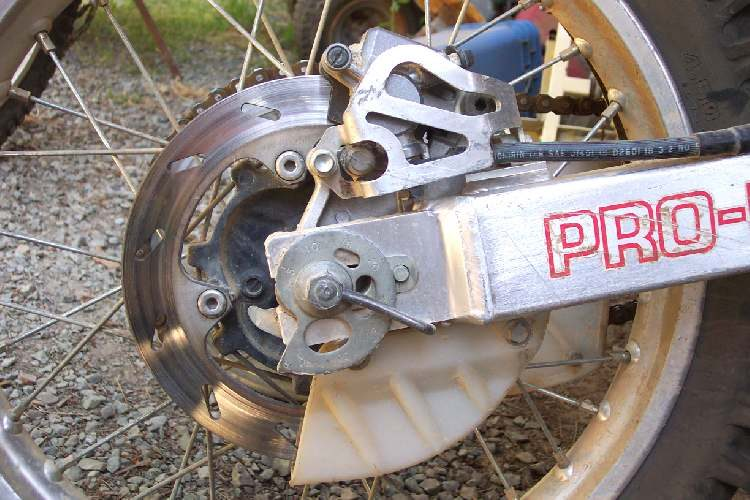

The swingarm is the arm that holds the rear wheel and pivots on the frame just behind the engine. The rear shocks connect it to the frame. At the pivot there is a long shaft running through bushes or bearings.
What it does
The swingarm lets the rear wheel move up and down while keeping it in line with the front. The pivot shaft and bushes must allow smooth up and down movement with no side play. Water and old grease wear the bushes. Worn bushes let the rear wheel steer slightly, which makes the bike wander and wears the chain unevenly. Many scooters use a swinging engine instead of a separate swingarm.
Signs it is worn or failing
- Rear wheel moves sideways when you push it: Swingarm moves sideways.
- Clunk over bumps: Clunk from the rear suspension.
- Weave or vague rear: Bike weaves.
- Chain rubbing on the arm: Chain rubs.
When to replace it
Replace the bushes or bearings if there is side play or rough movement. Replace the pivot shaft if it is bent beyond the limit; never straighten it. Replace the swingarm if it is bent or cracked.
What to match when buying
- Make, model and year. Bush or bearing type and size, pivot shaft diameter and length, and thread.
- Buy the bush or bearing set with its collars and seals as a kit.
- Use waterproof grease on the pivot.
Fitting notes
- Tighten the pivot nut to the value in your bike's manual. (The K-Light 125 manual gives two different values; see notes.)
- Check movement before refitting the shocks: the arm should fall under its own weight.
- See Check the swingarm pivot.
Reference (K-Light 125)
| Item | Value | PDF page |
|---|---|---|
| Pivot shaft | M14, 263 mm long | 160 |
| Pivot shaft runout limit | 0.2 mm (never straighten) | 171 |